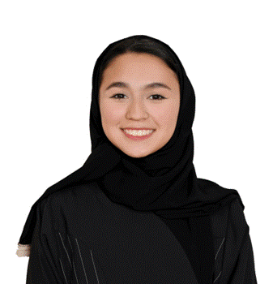

- Student
- Law

MUN is very special to Lojain; through it, she discovered her passion for law and arguing with people, which led her to co-founding the MUN club at her high school. A big part of MUN is discussing world problems that must be solved; such as the Uyghur genocide crisis in East Turkestan. Being an Uyghur herself, that crisis is very near and dear to her heart; which is why she values advocacy and education about such topics over anything. Now Lojain is a senior law student at Prince Sultan University with a deep passion for international law and art.
Abdullah is the Director General of PSUMUN and a dedicated computer science student specializing in cybersecurity. Passionate about fitness, Abdullah enjoys going to the gym and is a huge football fan, both on and off the field. Known for thriving under pressure, Abdullah embraces new experiences such as ice skating, public speaking, coding, editing, and boxing. With a love for meeting new people, Abdullah is committed to ensuring that PSUMUN thrives and becomes the best, feeling a deep connection to the psumun society.
Jawaher is a senior architecture and design student and a member of the U.S. Green Building Council (USGBC) interested in architecture heritage, conservation, and restoration. She had participated in and led several MUNs. A curious head who enjoys being around what moves her soul and keeps it lifted such as art in all its forms from freehand sketching to filmmaking. Jawaher is happy and honoured to be a part of PSUMUN. She believes in the power of every spoken tone and how it influences the actions of others
Nora began her public speaking journey in year 4, when she tackled the issue of deforestation in front of her little peers. She discovered, early on, that speaking on important topics and advocacy introduced her to a world of intricate issues that needed addressing, thus leading her to MUN, debating, and Jessup. Nora’s peaked curiosity about the environment, international law, and politics led her to studying law in PSU, and oftentimes spends her time reading books and sketching.

Dana has been interested in politics and debate since she first had the chance to participate in an MUN, now in her first year at PSU, she has been given the ideal opportunity to continue to refine her skills, which in turn gives her the perfect output to practice her passions. As the undersecretary of committee and delegate affairs, she is committed to making this MUN an unforgettable experience to all participants.

Maha Alshalfan is a first year student who is excited to pursue her degree in Computer science. Maha has been interested in MUN’s for over 5 years now. Maha started her journey as a delegate where she found her love and appreciation for MUN’s and her journey took off from there. She is now a vital part of the PSUMUN secretariat. Maha’s excitement in being involved in MUN’s has steamed from her love of debating and political affairs where she gets to mix many of her hobbies and passions in one place. Maha is an invaluable member of our team.

Khaled, the Undersecretary of Delegate and Committee Affairs, is a first year finance student who was able to skip the PYP. Outside of his role in PSUMUN and academia, he finds joy in running, which helps him stay energized and focused. He's also a big fan of reading, and he immerses himself in a wide range of books that broaden his perspective. His enthusiasm for MUNs fuels his commitment to ensuring smooth and impactful committee experiences for delegates.
Renad is an architecture student who is passionate about both design and diplomacy, finding excitement in solving problems and engaging in global discussions. She has been involved with PSUMUN since 2020 as a delegate, and now is excited to be part of the team. In her spare time Renad enjoys looking at buildings and doors.

Abdullah BinRayes is a senior-year Computer Science student specializing in Cyber Security. Excited to take on the role of Undersecretary of Conference Management for the second year, Abdullah is determined to meticulously plan and deliver an unforgettable conference experience. In addition to his academic pursuits, Abdullah has a keen interest in cars and sports, staying up-to-date with the latest developments in both fields. His passion for cybersecurity, diverse interests, and commitment to excellence position him to make a lasting impact and deliver an exceptional event.
Fares, currently holding the position of Undersecretary of Logistics, is a committed individual with a solid foundation in information systems and a specialization in cybersecurity, which provides him with a distinctive skill set for his role. His enthusiasm for effective organization and meticulous attention to detail are key strengths that contribute significantly to his effectiveness in supervising and coordinating logistical tasks. His steadfast dedication to guaranteeing a smooth experience for all involved showcases his unwavering commitment to improving the overall outcome of this occasion.
I am an architecture student at Prince Sultan University. I’ve always been interested in art and drawing in different formats. I’m excited to participate with this organization and look forward to collaborating, learning, and supporting one another as we strive to create positive change.
Yousef Alomirine is the Undersecretary of Public Relations and an Information Systems major specializing in the Cybersecurity track. He is a dedicated and hardworking professional with a strong network and a deep commitment to his work. Yousef is highly motivated, excelling in both teamwork and communication, and he brings a collaborative approach to every project. His ability to connect with people and drive results has established him as a key figure in public relations, while his expertise in cybersecurity enhances his ability to navigate the complexities of today’s digital landscape.

Noor has participated in MUNs in the past, and found a love and appreciation for debate in a setting that is filled with peers who share the same passion for dialogue that contributes to a stronger connection to the rest of the globe. For this year's PSUMUN, Noor is serving alongside the rest of the team as an undersecretary of public relations with the aim of creating a remarkable MUN experience for all attendees.

Jory Alsalamah is majoring in Software Engineering with a deep passion for technology and problem-solving. Known for her enthusiasm for developing innovative and user-friendly solutions, she has a strong interest in data analysis and professional experience in this field. Jory is also passionate about artificial intelligence and website development, particularly front-end design and enhancing user experiences through UI improvements. She is always eager to learn and explore new opportunities in the tech industry.
Toleen is a marketing major with a deep appreciation for MUN. She is a dedicated individual who is pursuing a degree in marketing, driven by her passion for creativity, critical thinking, and making meaningful connections. She constantly seeks innovative ways to promote, advertise, and engage with audiences. Alongside her academic pursuits, Toleen holds a genuine love for MUN. Her fascination with global affairs and the power of effective communication has fueled her dedication to MUN, allowing her to actively contribute to creating a better world.
Yara Albugami, PSUMUN’s Undersecretary of Graphic Design, is known for her passion for everything creative and digital. When her school started implementing PBL (Project-Based Learning), she knew this was her opportunity to shine since PBL combines public speaking, campaigning, and most relevantly graphic design. Over the years, Yara learned about 3D printing, robotics, and programming through a variety of courses and workshops, consequently she always knew she wanted to study Software Engineering, which is exactly where she is now. When it comes to hobbies, she enjoys drawing, swimming, and watching movies, especially science fiction including Star Wars movies.
Baraa Alsalameh, a third-year electrical engineering student, brings a unique blend of technical prowess and creative finesse to the PSUMUN team. As a professional videographer with over four years of experience, he has crafted exceptional films and video content for prestigious clients across Saudi Arabia. Within the PSUMUN family, Baraa serves as the Undersecretary of Media, overseeing all media production and management for the conference. Armed with his camera, he skillfully captures the conference's most memorable moments, adding a dynamic layer to the MUN experience
Hend is a senior law student at PSU and an active member of the public speaking community. She has participated and led multiple MUN conferences in Saudi Arabia and all over the world. She is also the Director of Public Speaking in Saudi Youth Society, where she organized public speaking workshops that focused on enriching the skills of the youth. She is also an avid lover of puzzles and true crime. Her skills and interests make her an invaluable member of the PSUMUN Secretariat.
Badr is a junior computer science student . Politics and debate have always been a big part of his life, from reading everything to do with the political sphere to debating those same things. His MUN career started in 2018 and ever since he’s participated in multitude of conferences and debate competitions . Apart from his academic endeavors, he spends most of his time either playing video games, reading, writing, or socializing with friends. Badr looks forward to creating an environment that will flourish with fun and constructive debate.

Over the past 18 years Ms. Sofia Adan has enjoyed an exceptional and diverse career which, at its
core, is primarily concerned with supporting the positive development of our international
community. Having worked across the global arena in countries such as the Kingdom of Saudi Arabia,
Egypt, Canada, the United Kingdom, the United States, Kenya, Georgia and Malaysia, Ms. Adan has
worked vigorously alongside government entities and NGOs on a variety of educational policies,
whilst also implementing new innovative strategies to enhance the strategic outputs of these
policies. In a testament to her illustrious career, she has also worked extensively with NGOs and
intergovernmental agencies on a wide cross section of issues related to development, community
enhancement, human security and education. Notably, in addition to her significant work in higher
education she has also worked with NGOs supporting refugees in Georgia and in a voluntary capacity
with the Red Cross. The innovative nature of her work and her experience working in a wide array
of
professional capacities, supporting diverse communities, bring to the fore the exceptional
interdisciplinary nature of Ms. Adan’s professional career.
Ms. Adan earned an honours degree in Social Work and Psychology, from Ryerson University, Canada;
a
Masters of Science in Education from the D’youville College in New York, USA, and is currently
pursuing a PhD in Education at the University of Birmingham.
Sofia enjoys reading and travelling. She hopes to continue her NGO and voluntary work world-wide.
With a wealth of experience in educational administration, teacher education, and English language teaching, Ms. Tanecia (Tasneem) Prue has made significant contributions to the international academic community and has played a pivotal role in shaping its educational landscape. Holding a Master's degree in TESOL from the American University in Washington, DC, she brings a rich blend of theoretical knowledge and practical insights to her work.
In addition to her work in higher education, Ms. Tasneem is an active participant in the Model United Nations (MUN) community. Recognizing the importance of cultivating diplomatic and critical thinking skills in educators and students alike, she remains committed to guiding and supporting individuals in their participation in Model UN conferences.
Nasra Adan has been teaching at universities in China, Korea, Japan, and Saudi Arabia for the past 24 years. For the last 11 years, she has been a lecturer in the English PYP department at Prince Sultan University, where she also serves as the Debate Club Advisor. Nasra enjoys photography and going on road trips around Saudi Arabia.